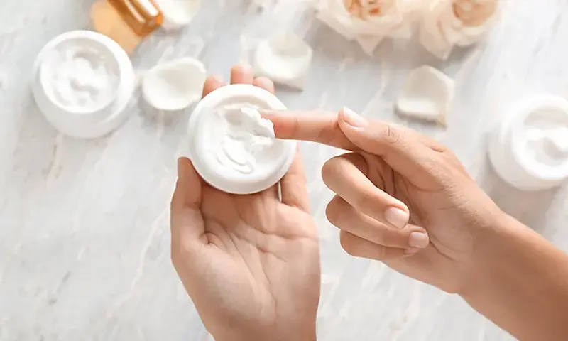
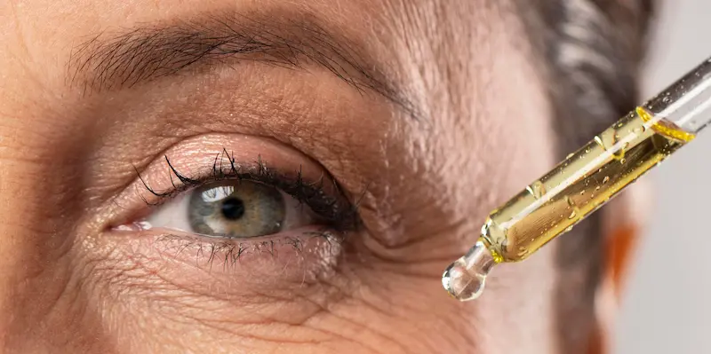

Retinol și niacinamidă: pot fi folosite împreună?
Retinolul și niacinamida sunt două dintre cele mai apreciate ingrediente din produsele moderne de îngrijire a pielii. În jurul lor există numeroase mituri: unii spun că nu trebuie folosite împreună, în timp ce alții le includ zilnic în aceeași rutină. În realitate, aceste ingrediente sunt compatibile și se completează foarte bine, ajutând la reducerea ridurilor, petelor pigmentare, imperfecțiunilor și la îmbunătățirea aspectului general al pielii. Secretul este să le aplici corect și să introduci retinolul treptat în rutina de îngrijire.
Vezi serviciileCum acționează retinolul și niacinamida împreună?
Retinolul stimulează regenerarea celulară și producția de colagen, în timp ce niacinamida întărește bariera naturală a pielii, reduce pierderea apei și ajută la diminuarea riscului de iritații. Folosite împreună, aceste ingrediente se completează reciproc și contribuie la o rutină de îngrijire mai eficientă și mai confortabilă.

Cui i se potrivește combinația de retinol și niacinamidă?
Recomandată pentru
- Primele semne ale îmbătrânirii pielii
- Ten neuniform și pete pigmentare
- Ten gras și mixt
- Semne post-acnee și pori dilatați
- Piele predispusă la deshidratare
- Ten tern și lipsit de luminozitate
Se recomandă prudență
- Piele foarte sensibilă
- Barieră cutanată afectată
- Inflamații active sau leziuni ale pielii
- Intoleranță individuală la ingrediente
- Prima utilizare a retinolului în concentrații mari
În majoritatea cazurilor, niacinamida ajută pielea să tolereze mai bine retinolul, reducând senzația de uscăciune, de piele care ține și iritațiile temporare. Dacă ai pielea foarte sensibilă, introdu retinolul treptat și urmărește reacția pielii.
Cum se schimbă pielea în urma utilizării regulate
Pielea devine mai netedă, mai catifelată și capătă un aspect sănătos și luminos.
Se reduc roșeața, uscăciunea și descuamarea care pot apărea la începutul utilizării retinolului.
Nuanța tenului devine mai uniformă, iar petele pigmentare și urmele lăsate de acnee sunt mai puțin vizibile.
Cu o rutină constantă, pielea devine mai fermă, mai luminoasă și mai îngrijită, iar ridurile fine sunt vizibil estompate.
Primele rezultate apar, de regulă, după câteva săptămâni de utilizare constantă. Efectele depind de tipul pielii, concentrația retinolului și consecvența rutinei de îngrijire.
Cum se folosesc corect retinolul și niacinamida
Retinolul și niacinamida pot fi folosite împreună în aceeași rutină de seară. Niacinamida contribuie la întărirea barierei naturale a pielii, menține nivelul optim de hidratare și reduce riscul de iritații care pot apărea în timpul utilizării retinolului.
Dacă ai pielea sensibilă, introdu retinolul treptat în rutină. Niacinamida poate fi utilizată zilnic pentru a susține bariera cutanată și pentru a crește confortul pielii în perioada de adaptare la retinol.

Cum să introduci retinolul și niacinamida în rutina de îngrijire
| Perioada | Recomandări |
|---|---|
| Primele 1–2 săptămâni | Retinol de 1–2 ori pe săptămână, niacinamidă zilnic |
| Săptămânile 3–4 | Retinol de 2–3 ori pe săptămână, niacinamidă zilnic |
| Săptămânile 5–6 | Retinol o dată la două zile, dacă pielea îl tolerează bine |
| După 8 săptămâni | Frecvența aplicării se stabilește în funcție de nevoile și toleranța pielii |
Niacinamida poate fi utilizată zilnic, deoarece ajută la întărirea barierei cutanate, menține hidratarea și reduce senzația de uscăciune. Retinolul trebuie introdus treptat, pentru ca pielea să se adapteze la ingredientul activ și pentru a reduce la minimum riscul de iritații.
Pot fi folosite împreună retinolul și niacinamida?
Da, în majoritatea cazurilor, retinolul și niacinamida pot fi folosite împreună. Studiile moderne și experiența dermatologilor arată că aceste ingrediente sunt compatibile și își pot completa reciproc efectele atunci când sunt utilizate corect în rutina de îngrijire.
Retinolul stimulează regenerarea celulară, susține producția de colagen și contribuie la reducerea ridurilor, petelor pigmentare și imperfecțiunilor. Niacinamida întărește bariera cutanată, menține hidratarea pielii și ajută la diminuarea uscăciunii și iritațiilor care pot apărea în perioada de adaptare la retinol.
Multe seruri și creme moderne conțin deja retinol și niacinamidă în aceeași formulă. Dacă folosești produse separate, le poți include în aceeași rutină de seară, cu condiția ca pielea să tolereze bine ingredientele active.
Reacții posibile ale pielii
La introducerea retinolului în rutina de îngrijire, pielea are nevoie de o perioadă de adaptare. În acest interval pot apărea reacții temporare, care de obicei se reduc pe măsură ce pielea se obișnuiește cu ingredientul activ. Niacinamida contribuie la calmarea pielii, susține bariera cutanată și ajută la menținerea unui nivel optim de hidratare.
Aceste reacții sunt considerate normale în perioada de adaptare la retinol, mai ales dacă produsul este utilizat pentru prima dată sau are o concentrație mai mare.
Când este recomandat să întrerupi utilizarea și să consulți un dermatolog
Dacă iritația este puternică, întrerupe temporar utilizarea retinolului, concentrează-te pe refacerea barierei cutanate și, dacă este necesar, consultă un medic dermatolog.
Rutina de seară cu retinol și niacinamidă
O rutină de îngrijire aplicată în ordinea corectă permite retinolului și niacinamidei să acționeze mai eficient, reducând în același timp riscul de uscăciune și iritații.
- Demachiază și curăță bine tenul.
- Dacă este necesar, aplică un toner hidratant delicat, fără acizi.
- Aplică o cantitate mică de retinol pe pielea complet uscată.
- După absorbția retinolului, aplică un ser sau o cremă cu niacinamidă.
- Încheie rutina cu o cremă hidratantă care conține ceramide sau pantenol.
- Dimineața, aplică întotdeauna un produs cu protecție solară SPF 30–50.
Dacă ai pielea foarte sensibilă, poți aplica mai întâi un strat subțire de cremă hidratantă, apoi retinolul și, la final, încă un strat de cremă. Această tehnică este cunoscută sub denumirea de metoda „sandwich” și poate reduce riscul de iritații în perioada de adaptare.
Ingrediente care se combină bine cu retinolul și niacinamida
O rutină de îngrijire echilibrată nu doar că sporește eficiența ingredientelor active, ci ajută și la menținerea unei bariere cutanate sănătoase. Atunci când alegi produse cosmetice, optează pentru ingrediente care completează efectele retinolului și ale niacinamidei.
Dacă începi să folosești retinol pentru prima dată, evită introducerea simultană a mai multor ingrediente active noi. Adaugă produsele treptat, pentru a observa mai ușor modul în care reacționează pielea.
Întrebări frecvente
Pot fi folosite împreună retinolul și niacinamida?
Da. Aceste ingrediente sunt compatibile și se completează reciproc. Niacinamida întărește bariera cutanată, reduce senzația de uscăciune și face utilizarea retinolului mai confortabilă.
Ce se aplică mai întâi: retinolul sau niacinamida?
De regulă, retinolul se aplică primul, pe pielea curată și complet uscată. După ce s-a absorbit, se poate aplica un ser sau o cremă cu niacinamidă. În cazul pielii sensibile, urmează întotdeauna recomandările producătorului.
Pot folosi retinolul și niacinamida în fiecare zi?
Niacinamida poate fi utilizată zilnic. Retinolul trebuie introdus treptat, începând cu 1–2 aplicări pe săptămână, iar frecvența se crește doar dacă pielea îl tolerează bine.
Este potrivită combinația de retinol și niacinamidă pentru pielea sensibilă?
Da, însă este recomandat să începi cu o concentrație redusă de retinol. Niacinamida ajută la calmarea pielii și la refacerea barierei cutanate, dar în cazul unei sensibilități accentuate este indicat consultul unui medic dermatolog.
După cât timp se văd rezultatele?
Primele îmbunătățiri ale texturii și uniformității tenului pot apărea după aproximativ 4–8 săptămâni de utilizare regulată. Pentru un efect anti-aging vizibil sunt necesare, de regulă, câteva luni de utilizare constantă.
Concluzii
Retinolul și niacinamida nu sunt ingrediente care se exclud reciproc, ci se completează foarte bine. Folosite corect, ele contribuie la îmbunătățirea texturii pielii, reduc semnele fotoîmbătrânirii, uniformizează nuanța tenului și susțin funcția naturală a barierei cutanate.
Retinolul stimulează regenerarea celulară și producția de colagen, în timp ce niacinamida ajută la refacerea barierei cutanate, reduce riscul de uscăciune, roșeață și descuamare. De aceea, această combinație este întâlnită frecvent în produsele moderne de îngrijire și este recomandată de numeroși specialiști în dermatologie și cosmetică.
Dacă folosești retinol pentru prima dată, introdu-l treptat în rutina de îngrijire, urmărește reacția pielii și aplică zilnic un produs cu protecție solară SPF. Astfel, vei obține beneficii maxime, iar pielea va rămâne mai sănătoasă, hidratată și mai bine protejată împotriva factorilor externi.
Chiar și cele mai eficiente ingrediente cosmetice oferă rezultate optime atunci când sunt utilizate constant, în concentrații potrivite și într-o rutină de îngrijire adaptată nevoilor pielii tale.
Împărtășește experiența ta
Părerea ta îi ajută pe alții să înțeleagă dacă acest ingredient li se potrivește. Chiar și 1–2 fraze sunt utile
Nu știți ce să scrieți? Selectați opțiunile — textul se va genera automat
Publicăm doar recenzii reale. Reclama și linkurile nu trec de moderare
Prin trimiterea comentariului, sunteți de acord cu Politica de confidențialitate.